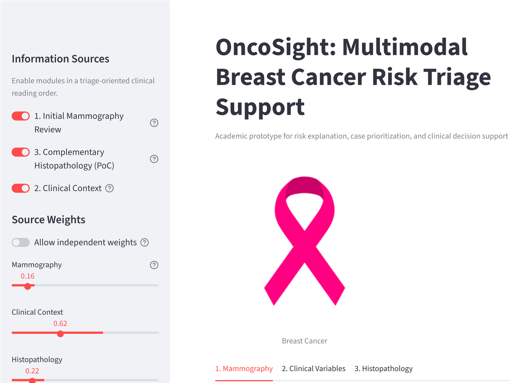
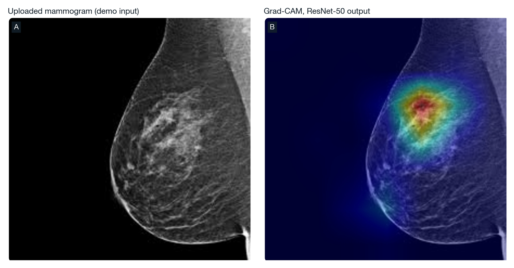
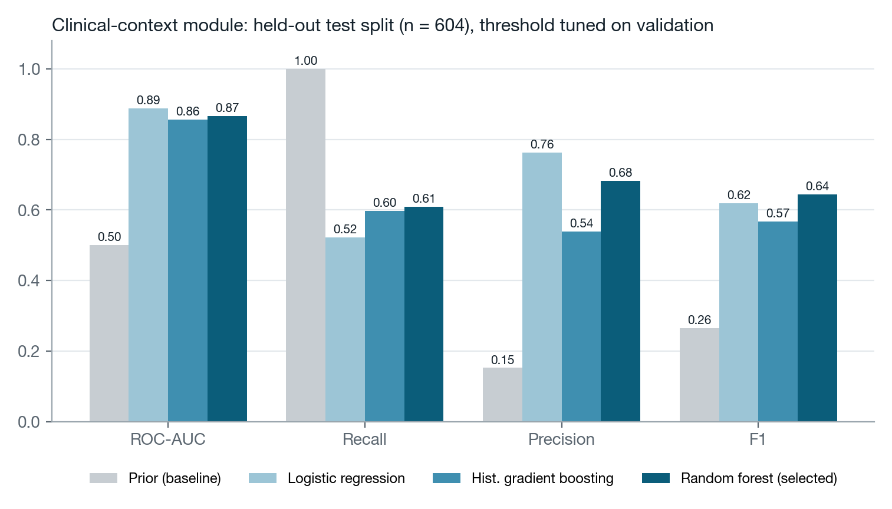
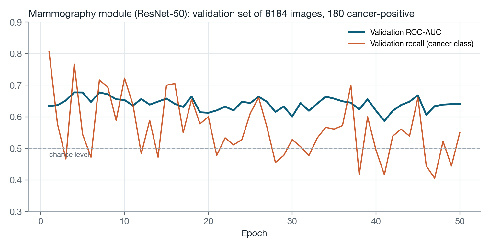
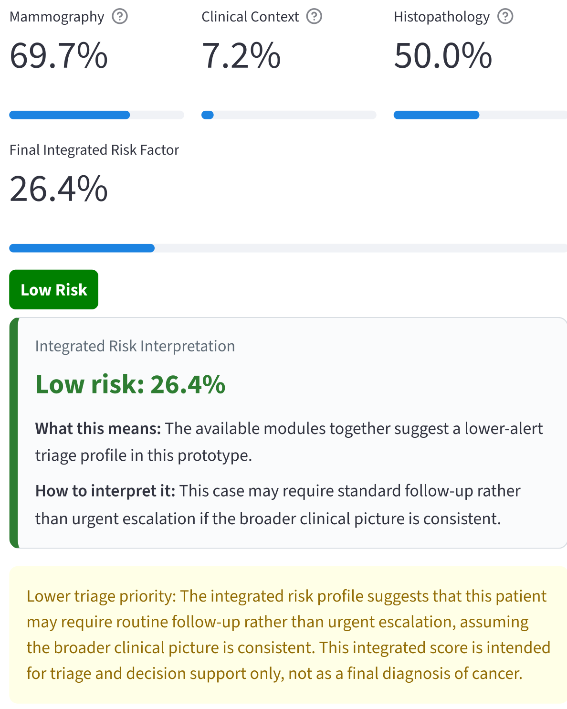

Clinical decision support · Multimodal fusion
OncoSight: breast cancer triage prototype
A decision-support prototype that turns three independent models (mammography, clinical variables and histopathology) into one explained triage score, and is explicit about what each part can and cannot do.
Not a medical device. OncoSight is an academic demonstration. It has not been clinically validated.
The problem
Breast cancer work-ups combine evidence that arrives at different points in the pathway: screening images, clinical history and, later, pathology. Most model demos show a single probability with no context. I wanted to explore how separately trained models can be combined so that a clinician can see each contribution, change its weight, and understand why the final score came out as it did.
My contribution
- Trained the three models and exported their metrics: ResNet-50 for mammograms, a class-balanced random forest for SEER clinical variables, and a small CNN for PCam histopathology patches.
- Wrote the Streamlit application: PNG/JPEG/DICOM input, Grad-CAM overlays, plain-language interpretation for every score, and a source-weight panel.
- Implemented weighted late fusion with weight redistribution. A disabled module is removed and its weight is shared among the others, never silently counted as zero risk. Scores map to Low (< 0.30), Moderate (≤ 0.60) and High risk bands.

Data and methods
| Module | Data | Model |
|---|---|---|
| Mammography | RSNA Screening Mammography | ResNet-50, ImageNet initialisation, 50 epochs; Grad-CAM for localisation |
| Clinical context | SEER breast cancer cohort (tabular) | Logistic regression, histogram gradient boosting and random forest, all class-balanced; threshold tuned on validation |
| Histopathology (proof of concept) | PatchCamelyon lymph-node patches | Small CNN on 96 × 96 patches |
Results



| Module | Metric | Value | Conditions |
|---|---|---|---|
| Clinical context (random forest) | ROC-AUC · recall · precision · F1 | 0.866 · 0.61 · 0.68 · 0.64 | Held-out test, n = 604, 92 positive; threshold 0.48 fixed on validation |
| Mammography (ResNet-50) | ROC-AUC · recall · precision | 0.641 · 0.55 · 0.03 | Validation, 8,184 images, 180 positive; final epoch, default threshold |
| Histopathology (CNN) | n/a | not exported | Model trained, but held-out metrics were not saved, so none are claimed |

Limitations and what I would do next
- Unmatched cohorts. No patient has all three modalities, so the fusion shows a mechanism, not a validated combined model.
- Leakage caught. An RSNA metadata model scored ROC-AUC 0.998 because it used BI-RADS, biopsy and invasive-status fields that are only known after diagnosis. I excluded it from the app and from all claims.
- Mammography performance. Next steps: higher input resolution, cropping to the breast region, patient-level evaluation and threshold selection for screening-level sensitivity.